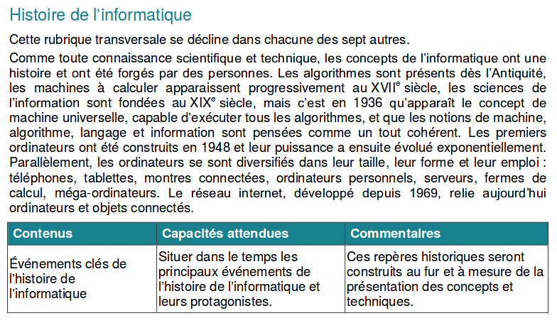

Partie header
La partie header contiendra (au moins) le titre de la page et une image de fond (à vous de modifier celle qui est actuellement présente). Le header de la page index.html contiendra également votre nom et prénom.
Vous devez modifier ce mini site web. Vous avez le droit de modifier le code html et le code css, laissez parler votre imagination !
Il vous faudra toutefois respecter les contraintes imposées.
Vous serez évalué sur les critères suivants :
Vous enverrez par mail, avant le 21 novembre 20h, le dossier contenant l'ensemble des fichiers. Ce dossier
sera nommé nom_prenom_projet1 puis sera zippé avant d'être envoyer à clemence.rozier@saint-charles-vienne.com.
Il s'agit d'un travail personnel !
Votre site contiendra au moins les pages suivantes :
Les noms de ces pages ne doivent pas être modifiés.
Par ailleurs, une page styles.css est déjà présente dans le dossier css/, ainsi qu'un dossier images/.
Le css de vos pages est à déclarer dans le fichier styles.css.
On ne devra trouver aucun style css dans les pages html.
Les pages html sont liées à cette feuille de style css
par la présence dans la partie head du code
<link rel="stylesheet" href="css/styles.css"> ou <link rel="stylesheet" href="../css/styles.css"> selon les pages.
Le css actuellement présent n'est là que pour vous donner des exemples. Si vous ne le comprenez pas en première lecture, faites des recherches sur le web à partir des noms de propriété utilisés. Vous pouvez modifier ce css à votre guise.
Ce css devra contenir au moins un élément html avec la règle
display: grid;. Il y a en effet une contrainte de structure à respecter
(cf ci-dessous).
Pour cette partie sur grid, vous vous appuierez bien sûr sur les exemples et exercices
du cours.
Évitez de surcharger vos pages par des couleurs ou des images en excès. Il est préférable de rester sobre : couleurs et images doivent être informatives.
Le code html de chaque page doit être indenté proprement de façon à ce que le début et la fin de chaque élément apparaisse clairement.
Le code html devra être vérifié en chargeant vos pages sur le w3 validator. Il ne devra rester aucune erreur.
Le code css est à contrôler également. Attention la page de validation n'est pas la même : w3 css validator.
Chaque page devra contenir :
La partie header contiendra (au moins) le titre de la page et une image de fond (à vous de modifier celle qui est actuellement présente). Le header de la page index.html contiendra également votre nom et prénom.
La partie principale sera découpée en deux colonnes (réalisées à l'aide de grid):
Le menu devra contenir pour chaque page :
Le footer contiendra un lien vers le site du lycée, et une licence d'utilisation de type Creative Commons (compétence PIX).
Le contenu de cette présente page sera remplacé par votre présentation :
Vos nom et prénom sont à indiquer dans la partie header. Le reste occupera la partie principale de la page. N'oubliez pas de soigner le css.
L'image de votre photographie devra bien sûr se trouver dans le dossier prévu
images/
Il s'agit d'une page sur l'histoire de l'informatique. Vous choisirez un thème de l'histoire de l'informatique en lien avec le programme de NSI :
Il sera possible de créer plusieurs pages si vous en ressentez la nécessité pour un exposé clair.
Vous présenterez également une frise historique (la forme peut être un simple tableau par exemple, une image faite par vos soin, une liste ... à vous de décider). Dans cette frise, vous présenterez en priorité les dates clés en lien avec le thème que vous aurez choisi.
Les thèmes possibles sont :
Cette page contiendra des liens sur les sources utilisées.
Les sources ne doivent pas être uniquement un lien. Pour chaque source, décrivez brièvement ce qu'elle vous a apporté.
Ces consignes sont à retrouver sur la page consignes.html